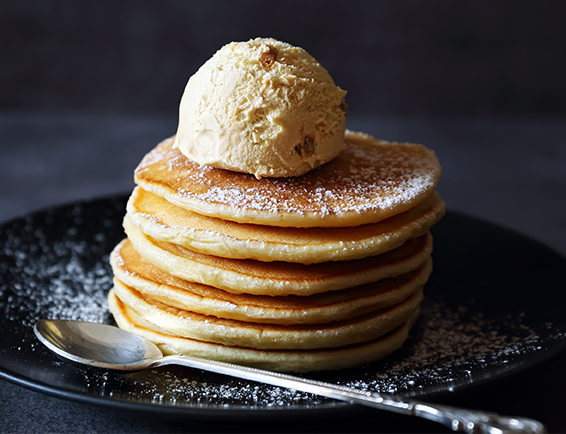

Huvudsida
Recept För Pannkaka
Fler Recept

Gör traditionella tunna pannkakor genom att blanda mjöl, mjölk och ägg och lite salt till en jämn smet. Stek smeten till tunna och smarriga pannkakor och servera med en söt sylt eller salta tillbehör.
Ingredienser (4 portioner):
1. 2 1/2 dl vetemjöl
2. 1/2 tsk salt
3. 6 dl mjölk
4. 3 ägg
5. smör (till stekning)
6. sylt, bär eller frukt till servering
Gör så här:
1. Blanda mjöl och salt i en bunke. Vispa i hälften av mjölken och vispa till en slät smet. Vispa i resten av mjölken och äggen.
2. Stek tunna pannkakor i lite smör, för varje pannkaka, i en stek- eller pannkakspanna.
3. Servera med sylt, bär eller frukt eller med salta tillbehör som Räksalsa med gurka och lime, Rökt lax med dillkräm eller Avokadoröra med bacon och tomat.